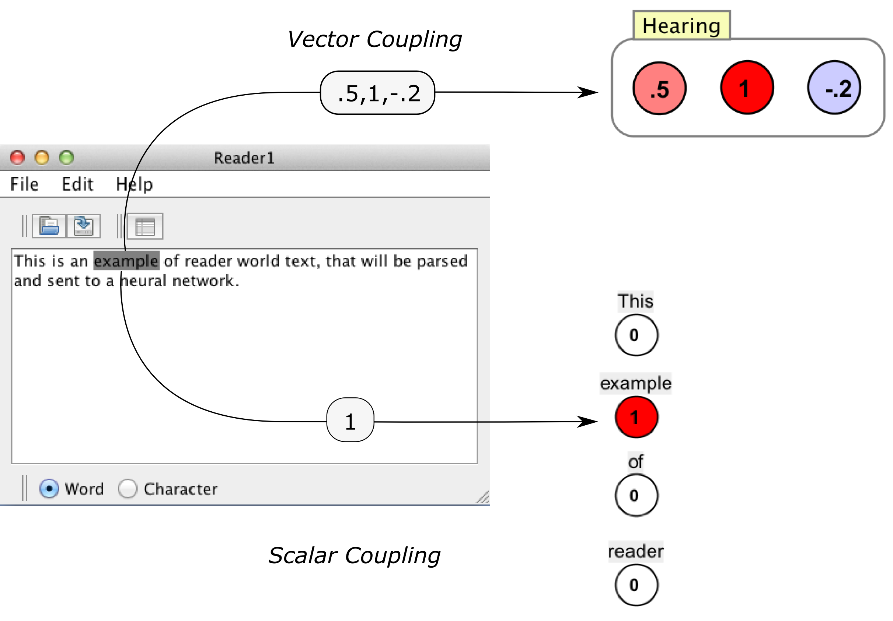

Text World
Text worlds transform text into numbers (reader world) or numbers in to text (display world). They are primarily used to model language, for example, to make networks that "read" text or produce simulated speech. They are primarily meant to help develop connectionist models of language processing (A classic example in this domain is Seidenberg's triangle model). However, text worlds can also be used more generally as a way of incorporating text processing in to a simulation, for example to log information or issue commands to a network.

To see some simulations that use workspaces, try the workspace Scripts menu. Three scripts that use workspaces are ElmanPhonemes.bsh, ElmanSentences.bsh, and tisk2.bsh.
(Note that in these docs we'll use "text" and "word" to refer to any string of text. Thus, a "word" can be a letter, or a string representation of a phoneme or grapheme, or abstract text used to log or display information.)
The basic idea
There are two kinds of text world: Reader Worlds and Display Worlds. Here is the basic idea of how they work (see the sub-pages for more details).
| 
Reader World |

Display World |
Reader worlds produce scalars or vectors, while display world consume scalars and vectors (recall that producers and consumers are parts of couplings). It may help to think of the consumers and producers as relating the body to the brain. Reader world produces neural activity: it takes what we see or hear and converts these in to neural activations which it sends to the brain. Display world consumes neural activity: it takes activations from the brain, and converts them in to writing and speech.)
Reader World.Text is parsed and converted in to numbers. Compare reading or hearing, where we see or hear words, and our eyes and ears convert these words in to patterns of activity in the brain (which are patterns of numbers in Simbrain). There are two kinds of reader world producers:
Scalar producer: When a piece of text is parsed, a single number is passed to a scalar consumer (usually a neuron).
Vector producer: When a piece of text is parsed, a vector of numbers is passed to a vector consumer (usually a neuron group).
Display World. Numbers come in, and text is produced in the display world. Compare speech, where patterns of activity (modeled by patterns of numbers in Simbrain), and spoken or written or signed words are produced by different muscle systems. There are two kinds of display world consumer.
Scalar consumer: If the incoming value above a threshold, display the text.
Vector consumer: If the incoming value is sufficiently near the vector associated with a prototype string in "vector-dictionary", display that text.
Methods like these, of converting from numbers to text and vice-versa are called "coding schemes". Scalar attributes are based on a "local coding" scheme, where neuron are associated with specific words: a neuron's activation either produces a word or it is activated when that word is "read". Vector attributes are based on "distributed" coding schemes. A pattern of activations is either produced when a given word is read, or "spoken" when a given vector occurs in a neural network.